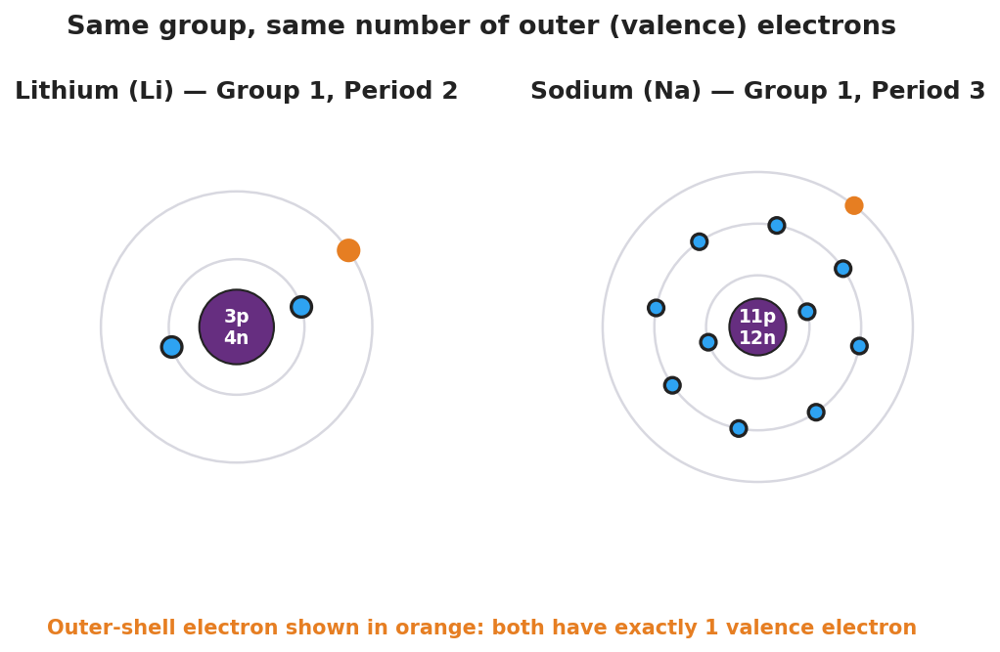
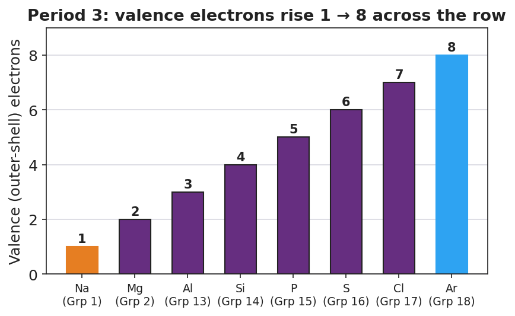

01 Phenomenon
Your teacher shows you the outline of the periodic table with no symbols inside it — just the shape. It is not a neat rectangle. The top row has two boxes far apart with a wide gap. The next rows are short. Then the rows suddenly get much longer, and a separate block floats detached at the bottom. No other chart you have seen looks like this. And yet scientists drew this shape on purpose and will not let you redraw it as a tidy rectangle.
02 Driving question
Why does the periodic table have such a strange, lumpy shape instead of being a plain rectangle?
03 Notice & wonder
| I notice… | I wonder… |
|---|---|
Turn & Talk #1: If the shape of the table is a map of something — the way a subway map is a map of stations — what do you think it could be a map of? What about an atom could decide which row or column it goes in?
04 Initial model
You are in the year 1869. The phrase “periodic table” does not exist yet. Your group has a set of element-property cards. One card is missing.
Part A — Sort. Arrange the cards so that (1) the ordering value increases as you go, and (2) cards with similar properties line up underneath each other in columns. Leave a gap where the missing card belongs.
Sketch your arrangement (boxes and a gap) here:
Part B — Predict the missing element (“wanted poster”). Using only the pattern in the cards above and below the gap, predict:
| Property | Your prediction |
|---|---|
| Metal or nonmetal? | |
| How reactive? | |
| Formula of a compound it would form | |
| Why do you predict this? (what pattern told you?) |
05 Investigate
Part 1 — Why do the columns repeat? (Bohr-model evidence)
Two of the elements from your sort landed in the same column because they behave alike. Look inside them.

Count the electrons in the outermost ring of each atom:
| Element | Total electrons (all rings) | Electrons in the OUTER ring only |
|---|---|---|
| Lithium (Li) | ||
| Sodium (Na) |
The two atoms are very different sizes. What is the same about them? _______________________________________________
These two elements landed in the same column. Based on your counts, what do you think a “column” of the table has in common? _______________________________________________
Part 2 — Reading across a row

Walk across one row (left to right) using the chart above.
How many outer-shell electrons does sodium (Na) have? ________ Argon (Ar)? ________
Going across the row, the outer-electron count goes up by how much each step? ________
When the count reaches 8 and the row “fills up,” what does the table do next? _______________________________________________
06 Make it make sense
For each item, use the periodic table and what you discovered above. Show your reasoning, not just an answer.
Potassium (K) sits directly below sodium (Na) in the same column.
- How many outer-shell (valence) electrons will potassium have? _______________
- Will potassium react like sodium, or differently? Why? _______________________________________________
Two elements: one is in Group 1, the other is in Group 7 (also written Group 17).
- Outer-shell electrons in the Group 1 element: ________ In the Group 17 element: ________
- Why would these two elements behave very differently? _______________________________________________
An element is in Period 4 of the table.
- What does the period number (4) tell you about its electrons? _______________________________________________
- Does the period number tell you how many outer electrons it has? Why or why not? _______________________________________________
07 Key vocabulary
- period
- a horizontal *row* of the periodic table; the period number tells you how many electron energy levels (shells) the atom's electrons occupy. Period 3 elements, for example, fill three shells.
- group
- a vertical *column* of the periodic table; for main-group elements, the group number tells you the number of valence electrons, which is why elements in the same group have similar chemical properties.
- valence electrons
- the electrons in an atom's outermost energy level; they determine how the atom bonds and reacts. The number of valence electrons can be read directly from an element's group, which is how *position* in the table predicts *chemistry*.
Use each term in a sentence about today’s card sort or Bohr-model investigation. Do not copy the definition — describe something you actually did or observed.
period: _______________________________________________ _______________________________________________
group: _______________________________________________ _______________________________________________
valence electrons: _______________________________________________ _______________________________________________
08 Revise your model
Return to your Initial Model “wanted poster.” Add vocabulary labels to explain why your prediction worked:
The missing element shared a __________ (column) with its neighbors, which means it had the same number of __________ __________.
That is why it behaved like the elements above and below it in the column.
Then finish this Because / But / So sentence:
Lithium and sodium behave almost identically because __________________________________________, but __________________________________________, so __________________________________________.
09 Exit ticket
(a) Element X has atomic number 12. State its number of protons, and use the Periodic Table to give its period and group.
Protons: ________ Period: ________ Group: ________
(b) Beryllium (Be) and magnesium (Mg) are both in Group 2. How many valence electrons does each have, and what does that tell you about how they react?
Valence electrons — Be: ________ Mg: ________ What it tells you: _______________________________________________
(c) In one sentence, explain — using the idea of valence electrons — why two elements in the same group behave alike even though one is much larger than the other.
10 Explore further
- Mendeleev "Predict the Element" activity (core ABCs investigation): Students receive a set of element-property cards (mass-like ordering value, reactivity, a common compound formula, metal/nonmetal). Working in groups, they sort the cards so that *similar properties line up in columns*. One card is deliberately missing, leaving a gap. Using the pattern in the surrounding cards, students predict the properties of the missing element before the teacher reveals it — re-enacting exactly what Dmitri Mendeleev did in 1869 when he predicted "eka-silicon" (later discovered as germanium). The Javalab simulation "Mendeleev's Periodic Table" (javalab.org) lets students drag element tiles into a grid and watch the periodic pattern emerge; use it as a digital extension or whole-class projection after the card sort.
- Bohr-model column check: Using `figures/group1_bohr_li_na.png`, students compare the atomic structure of two elements that landed in the *same column* of their sort (Li and Na). They count outer-shell electrons and discover that both have exactly one — the structural reason the column repeats.
- Period-3 valence trace: Using `figures/period3_valence_pattern.png`, students walk across one row and watch the valence-electron count climb 1 → 8, connecting horizontal position to electron count.